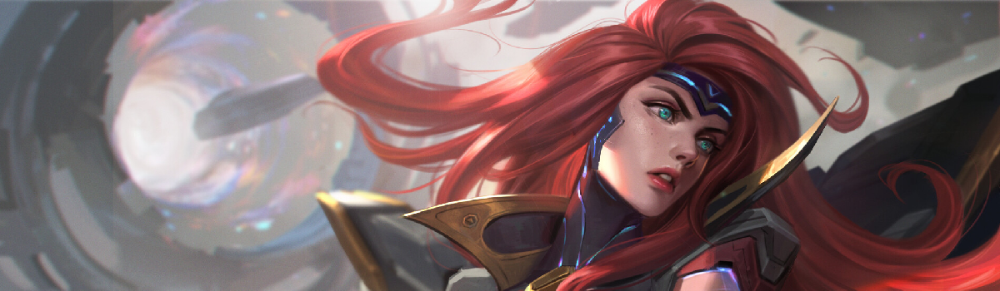
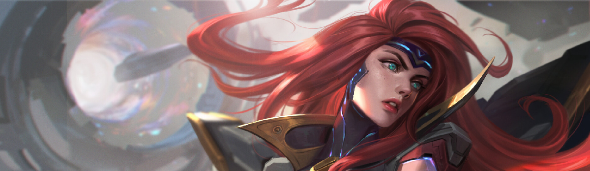

Dividida entre sua natureza mortal e celestial, Morgana prendeu as asas para preservar sua humanidade e inflige sua dor e amargura nos desonestos e corruptos. Ela rejeita as leis e tradições que considera injustas e luta pela verdade nas sombras de Demacia com escudos e correntes de fogo sombrio, ainda que alguns tentem reprimi-la. Acima de tudo, Morgana acredita que até os banidos e exilados podem, um dia, se erguer.

 
